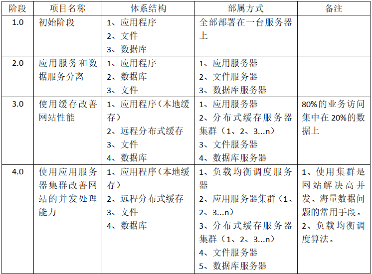
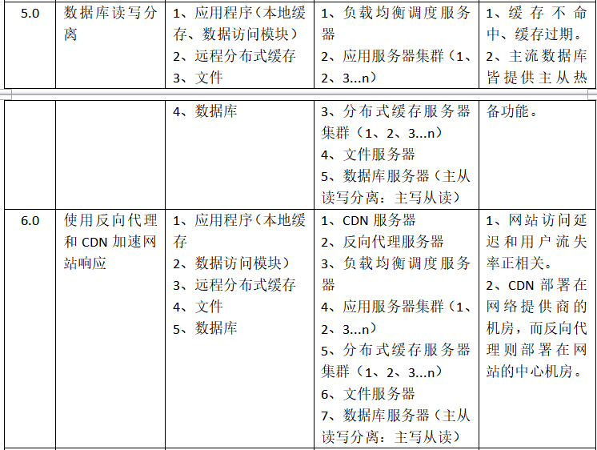
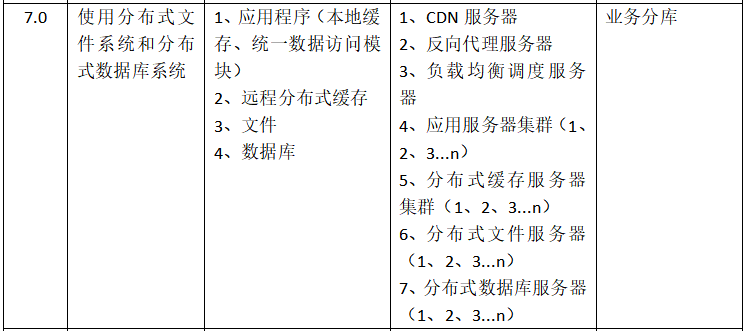
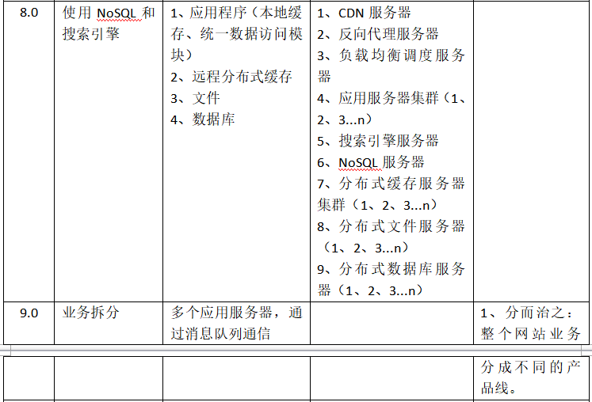
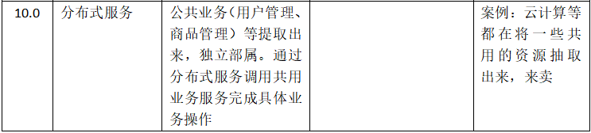

这本书怎么说呢，属于科普类书籍，广度够了，无深度，作者绝对是个有情怀的人。
大型网站架构演化
大型网站软件系统特点：
①高并发，大流量
②高可用
③海量数据
④用户分布广泛，网络情况复杂
⑤安全环境恶劣
⑥需求快速变更，发布频繁
⑦渐进式发展
大型网站架构演化发展历程





大型网站架构模式
分层、分割、分布式、集群、缓存、异步、冗余备份、自动化CI（发布过程自动化、自动化代码管理、自动化测试、自动化安全检测、自动化部属）、安全。
第三章 大型网站核心架构要素
3.1、性能
3.2、可用性
可用性指标：n个9，99.99%。
3.3、伸缩性
是指不断向集群中加入服务器的手段来缓解不断上升的用户并发访问压力和不断增长的数据存储需求。
3.4、扩展性
增加新业务的难以程度。大型网站提供开放平台接口。
3.5、安全性
瞬时响应：网站的高性能架构
网站性能是客观指标，响应时间、吞吐量等。
4.1、网站性能测试
用户角度：响应时间
开发人员角度：响应延迟、系统吞吐量、并发处理能力、系统稳定性
运维人员角度：基础设施性能和资源利用率。网络运营商带宽、服务器硬件配置、数据中心网络架构、服务器和网络带宽资源利用率。
性能指标：响应时间、并发数、吞吐量（单位时间内系统处理请求的数量TPS）、性能计数器（CPU使用、磁盘IO）。
性能测试→负载测试→压力测试：递进关系。
4.2、性能优化
Web前端性能优化：
浏览器访问优化。①减少Http请求；②使用浏览器缓存；③启用压缩；④CSS放在页面最上面、JavaScript放在页面最下面；⑤减少Cookie传输。
CDN加速。静态资源缓存在CDN服务器上。
反向代理。请求转发。
应用服务器性能优化：
分布式缓存。JBoss Cache：需要更新同步的分布式缓存。Memcached：不互相通信的分布式缓存。
异步操作。削峰。
使用集群。
代码优化。①多线程；②资源复用：单例、对象池、数据库连接池；③数据结构；④垃圾回收。
存储性能优化：
固态硬盘。
RAID、HDFS。
万无一失：网站的高可用架构
5.1、网站可用性的度量与考核
业界习惯：多少个9。QQ满足4个9，Twitter还不足2个9。
可用性考核：对外是服务承诺，对内是考核指标。
绩效考核中的故障分 = 故障时间（分钟）× 故障权重。
5.2、高可用的网站架构
主要手段：数据和服务的冗余备份和实效转移。
5.3、高可用的应用
负载均衡：无状态服务的失效转移。通过心跳检测机制监测服务器状态。
Session服务器。
5.4、高可用的服务
分级管理、超时设置、异步调用、服务降级（服务端高压力时，有些人暂时无法访问，仅开放重要的人的访问权限）、幂等性设计。
5.5、高可用的数据
保护网站的数据就是保护企业的命脉！
CAP原理：数据持久性、数据可访问性、数据一致性。
数据备份：异步热备份（写Master与读Slave）、同步热备份。
失效转移：失效确认、访问转移、数据恢复。
5.6、高可用网站的软件质量保证
网站发布：过程和服务器宕机效果相同。关闭部分服务器。
自动化测试：ThoughtWorks的Selenium。
预发布验证：发布到测试环境（预发布服务器）上。
代码控制：Git、SVN版本管理。
自动化发布：火车发布模式。
灰度发布：让部分真实用户先使用预发布版本。
网站运行监控。用户行为日志收集、服务器性能监控、运行数据报告。
“事物总是先求生存，然后求发展。”
永无止境：网站的伸缩性架构
6.1、网站架构的伸缩性设计
①根据功能进行物理分离实现伸缩；②单一功能通过集群实现伸缩。
6.2、应用服务器集群的伸缩性设计
HTTP重定向负载均衡。欺骗性重定向：SEO作弊。
DNS域名解析负载均衡。
反向代理负载均衡。反向代理服务器需要配置双网卡和内部外部两套IP地址。
IP负载均衡。
数据链路层负载均衡。三角传输模式。又名直接路由方式（DR）。用的最广！LVS。
负载均衡算法。①轮询；②加权轮询；③随机；④最少连接；⑤原地址散列：保证同一个IP每次都访问同一个服务器。
6.3、分布式缓存集群的伸缩性设计
Memcached访问模型P107
一致性Hash算法。实现Key到缓存服务器的Hash映射。
“计算机的任何问题都可以通过增加一个虚拟层来解决！”
虚拟节点的一致性Hash算法。
6.4、数据存储服务器集群的伸缩性设计
关系型数据库：主从读写分离。Cobar：分布式关系数据库访问代理，介于数据库服务器与应用服务器之间，无法执行跨表的JOIN操作。GreenPlum：支持跨表JOIN操作，但访问延迟较大。
NoSQL数据库：放弃了SQL和ACID。HBase：可分裂的HRegion及可伸缩的分布式文件系统HDFS。HMaster+Zookeeper（分布式一致性数据管理服务）+HRegionServer结构。